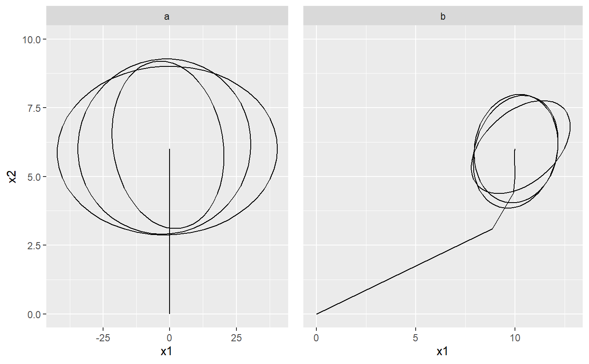

Generate a trajectory for the mean in one regime of a PCM
PCMTrajectory(model, regime = PCMRegimes(model)[1], X0 = rep(0, PCMNumTraits(model)), W0 = matrix(0, nrow = PCMNumTraits(model), ncol = PCMNumTraits(model)), tX = seq(0, 100, by = 1), tVar = tX[seq(0, length(tX), length.out = 4)], dims = seq_len(PCMNumTraits(model)), sizeSamp = 100, doPlot2D = FALSE, plot = NULL)
| model | a PCM object. |
|---|---|
| regime | a regime in `model`. Default is PCMRegimes(model)[1]. |
| X0 | a numeric vector specifying an initial point in the trait space. Default is rep(0, PCMNumTraits(model)) |
| W0 | a numeric k x k symmetric positive definite matrix or 0 matrix, specifying the initial variance covariance matrix at t0. |
| tX, tVar | numeric vectors of positive points in time sorted in increasing order. tX specifies the points in time at which to calculate the mean (conditional on X0). tVar specifies a subset of the points in tX at which to generate random samples from the k-variate Gaussian distribution with mean equal to the mean value at the corresponding time conditional on X0 and variance equal to the variance at this time, conditional on W0. Default settings are `tX = seq(0, 100, by = 1)` and `tVar = tX[seq(0, length(tX), length.out = 4)]`. |
| dims | an integer vector specifying the traits for which samples at tVar should be generated (see tX,tVar above). Default: seq_len(PCMNumTraits(model)). |
| sizeSamp | an integer specifying the number points in the random samples (see tX and tVar above). Default 100. |
| doPlot2D | Should a ggplot object be produced and returned. This is possible only for two of the traits specified in dims. Default: FALSE. |
| plot | a ggplot object. This can be specified when doPlot2D is TRUE and allows to add the plot of this trajector as a layer in an existing ggplot. Default: NULL |
if doPlot2D is TRUE, returns a ggplot. Otherwise a named list of two elements:
dt a data.table with columns 'regime', 't', 'X', 'V' and 'samp'. For each row corresponding to time in tVar, the column samp represents a list of sizeSamp k-vectors.
dtPlot a data.table with the same data as in dt, but with converted columns X and samp into 2 x k columns denoted xi, i=1,...,k and xsi (i=1...k) This is suitable for plotting with ggplot.
set.seed(1, kind = "Mersenne-Twister", normal.kind = "Inversion") # a Brownian motion model with one regime modelOU <- PCM(model = PCMDefaultModelTypes()['F'], k = 2) # assign the model parameters at random: this will use uniform distribution # with boundaries specified by PCMParamLowerLimit and PCMParamUpperLimit # We do this in two steps: # 1. First we generate a random vector. Note the length of the vector equals # PCMParamCount(modelBM). randomParams <- PCMParamRandomVecParams( modelOU, PCMNumTraits(modelOU), PCMNumRegimes(modelOU)) # 2. Then we load this random vector into the model. PCMParamLoadOrStore( modelOU, randomParams, 0, PCMNumTraits(modelBM), PCMNumRegimes(modelBM), load = TRUE)#> [1] 11# let's plot the trajectory of the model starting from X0 = c(0,0) PCMTrajectory( model = modelOU, X0 = c(0, 0), doPlot2D = TRUE)#> Warning: Removed 98 rows containing non-finite values (stat_ellipse).# A faceted grid of plots for the two regimes in a mixed model: pla <- PCMTrajectory( model = PCMBaseTestObjects$model_MixedGaussian_ab, regime = "a", X0 = c(0, 0, 0), doPlot2D = TRUE) + ggplot2::scale_y_continuous(limits = c(0, 10)) + ggplot2::facet_grid(.~regime) plb <- PCMTrajectory( model = PCMBaseTestObjects$model_MixedGaussian_ab, regime = "b", X0 = c(0, 0, 0), doPlot2D = TRUE) + ggplot2::scale_y_continuous(limits = c(0, 10)) + ggplot2::facet_grid(.~regime) + ggplot2::theme( axis.title.y = ggplot2::element_blank(), axis.text.y = ggplot2::element_blank(), axis.ticks.y = ggplot2::element_blank()) cowplot::plot_grid(pla, plb)#> Warning: Removed 98 rows containing non-finite values (stat_ellipse).#> Warning: Removed 98 rows containing non-finite values (stat_ellipse).